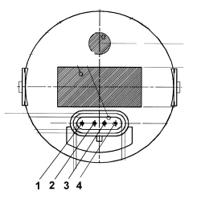

5580EB SIREN OPERATION CHECK
- Path
- Test > 55 ELECTRICAL EQUIPMENT > 5580 SPECIAL ACCESSORIES > 5580E ANTI-THEFT DEVICE > 5580EB SIREN OPERATION CHECK
- Kind
- test / check procedure
- Applies to
- all engines; all production periods
- Interactive page
- https://sloeber94.github.io/elrnDB-fCrm/en/#/194004757
Applies to: all engines; all production periods
CHECK TO BE PERFORMED | RESOLUTION IF THE CHECK IS NOT OK | |
|---|---|---|
1 | Connect the diagnostic instrument in Voltmeter mode with the positive terminal on Pin 1 and the negative earthed to Pin 3 of the alarm siren The direct voltage reading should be 12 Volt. | Restore the connections between the Body Computer node, siren and earth |
2 | Disconnect the siren connectora Body Computer connector B and check the continuity of the wiring between Pin 2 of the siren connector and Pin 25 of Body Computer connector B | Restore wiring continuity |
3 | Check the insulation of the earth line | Restore wiring insulation |
4 | Replace the siren |
- Siren

- Siren pinout
1. Power supply
2. Serial line
3. Earth
4. N.C.